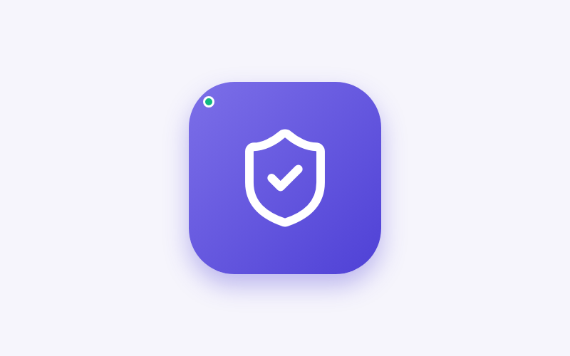
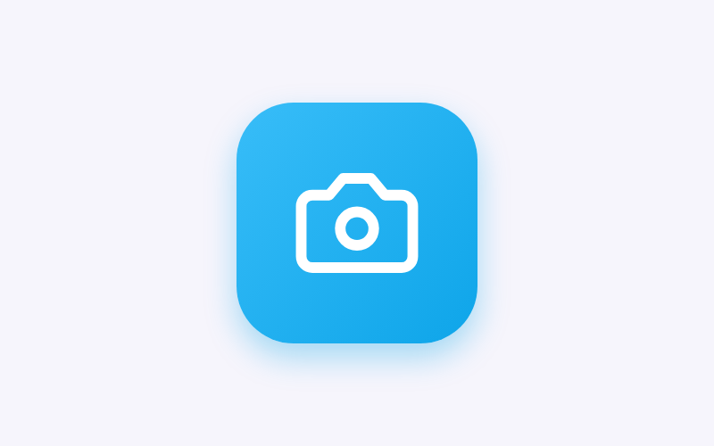
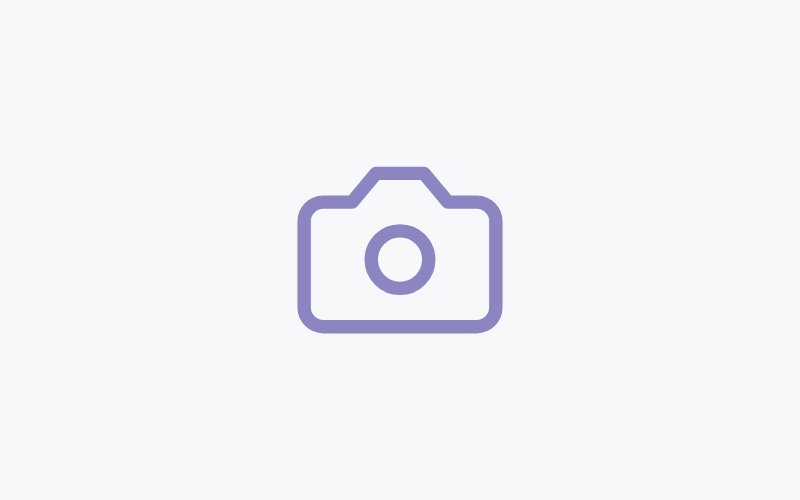

أمانك
حمايتك وحماية عائلتك بسرية وأمان تامَّين
التطبيقات الآمنة والخطرة
اعرف التطبيقات المناسبة لطفلك
حماية طفلك
راقب نشاط جهاز طفلك واحصل على تنبيهات
كاميرا المراقبة
راقب منزلك وتحدث مع أطفالك عن بعد
سجل المهام
تصميم الشعار وتنفيذه والتسجيلات قبل وبعد التعديل
فيديو شرح البرنامج
امسحي الباركود بالجوال لمشاهدة فيديو شرح موقع أمانك على يوتيوب
امسحي الباركود بكاميرا الجوال لمشاهدة الفيديو مباشرة على يوتيوب
الأيقونات قبل وبعد التعديل
مقارنة الأيقونات المطلوبة — النسخة المعدّلة في الأعلى والأصلية في الأسفل



تشفير وسرية تامة
جميع بياناتك ومحادثاتك محمية بتشفير كامل من الطرف إلى الطرف.